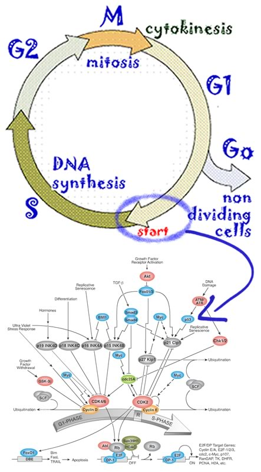
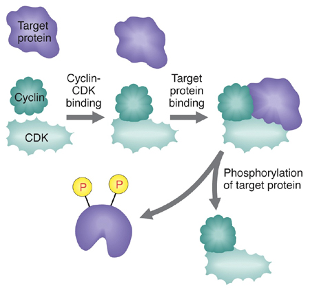

Typically the cell cycle is focused on a particular decision point known as “START” (although there are other decision points that are equally important, but I will ignore them here). START is the switch that decides whether a cell will begin to replicate its DNA or not. As you probably already know (or are coming to suspect), the control of the cell cycle is complex - in an organism as “simple” as baker’s yeast there over 800 proteins involved in the regulatory network controlling the cell cycle (see Li et al., 2004 if you dare!) The START decision is a particularly important one, since once DNA replication begins it is hard to stop without causing mutations (perhaps you can imagine why). While the regulatory network controlling START is complex, it boils down to whether a particular enzyme, a cyclin-dependent kinase or CDK, in this specific case the CDK2 protein, is active. A kinase is a protein that catalyzes the phosphorylation of a target protein [link]; phosphorylation leads to changes in the target proteins' activity. |
 |
 |
However, CDK2 is inactive unless bound to an polypeptide, a cyclin. While CDKs are normally stable proteins that are made continuously, the expression and stability of cyclins are more actively regulated. So, from a simplistic but useful perspective, the entire point of the regulatory network controlling START is to control the intracellular concentration of the cyclin(s) that regulates CDK2 activity. Once CDK2 activity rises above a certain point, the cell passes through START and begins DNA synthesis. Once START is passed, the cyclin is actively degraded (which leads to CDK2 inactivation). This keeps the cell from replicating its DNA more than once. |
|
| a |